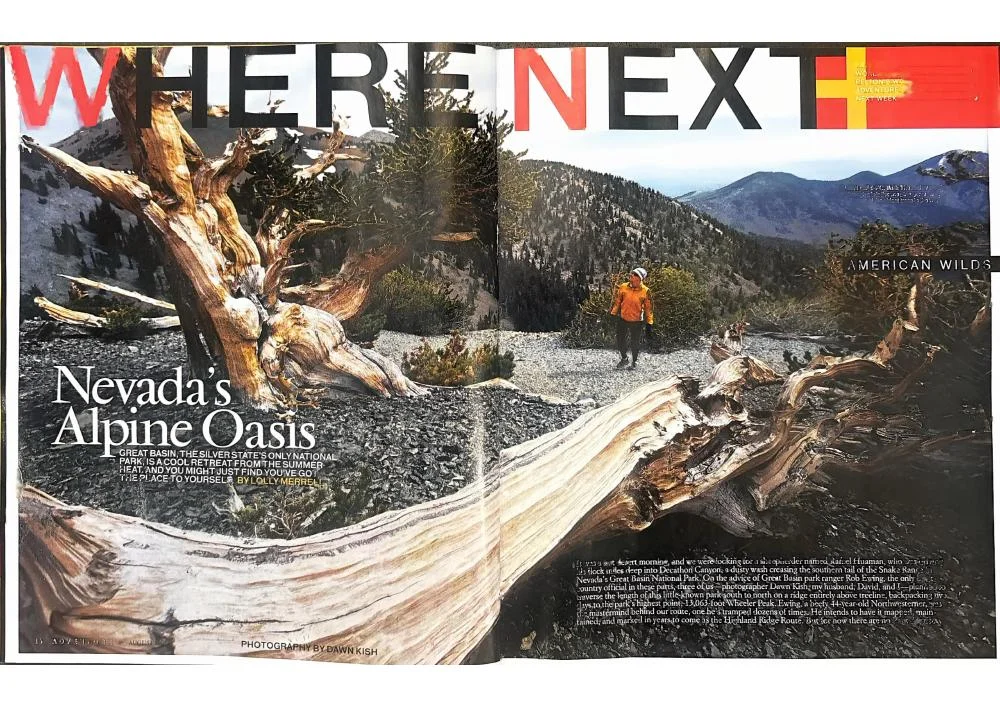

Nevada’s Alpine Oasis

Exploring Great Basin National Park, from ancient bristlecone pines to the high country of Nevada’s Snake Range.
View PDF here »PDF · 4.0 MB← Back to Travel and Adventure
Exploring Great Basin National Park, from ancient bristlecone pines to the high country of Nevada’s Snake Range.
View PDF here »PDF · 4.0 MB← Back to Travel and Adventure